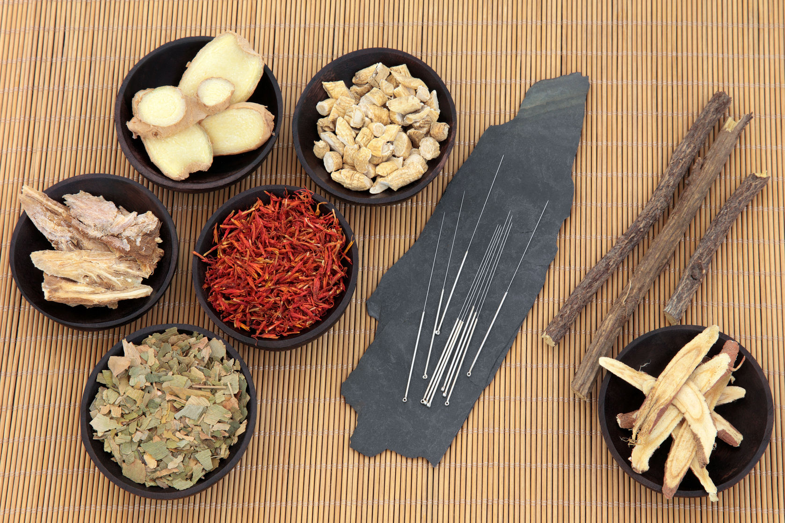

isabelle.integmed@icloud.com
512-879-6555
(no text messages)
WELCOME ABOUT SERVICES PEDIATRICS APPOINTMENTS FAQ
ACUPUNCTURE
ASIAN BODY WORK
CHINESE HERBAL FORMULAS
COMPLEMENTARY TECHNIQUES
Chinese Herbs
Chinese herbal medicine is a 2,000 year old tradition, using high quality, professional-grade herbal medicines (plants and other natural occurring substances) to enhance health and vitality. The foundation of Chinese herbal medicine is to support the body's natural self-healing mechanisms and abilities. Since each client has different needs, the herbs are carefully selected and combined to synergistically blend together to achieve optimal results for each individual.
Chinese herbs are often used in conjunction with acupuncture for added therapeutic effect. While many cultures have herbal medicine traditions, the sophistication of Chinese herbal medicine is unsurpassed. Chinese herbal medicine has a long history reaching back 2000 years, and the resulting system is now used to treat everything from the common cold to certain types of cancer.
There are thousands of herbs in the Chinese materia medica, of which about 300 are commonly used. You will generally receive a mixture of several different herbs in a formula that has been tailored to your condition. Chinese herbs are extremely effective and normally have only mild side effects, however it is very important to tell us about all the medications and supplements you are currently taking so that we can avoid any unwanted interactions with your formula.
Dietary Therapy
Understanding food from the perspective of Traditional Chinese Medicine (TCM) can be of tremendous benefit in working toward a more healthy lifestyle. Dietary therapy consists of understanding the energetic properties of food. Just as Chinese herbs are carefully selected for each individual, so are recommended dietary guidelines. We can help you out of imbalanced dietary habits that are causing disharmony in your body and redirect you toward healing foods that will harmonize your body.
